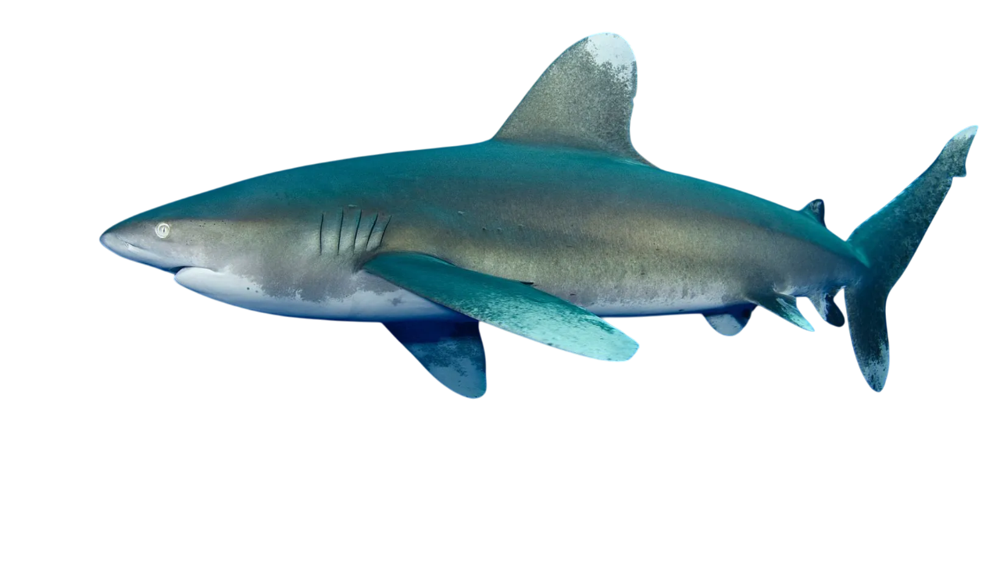

| índice: |
| -Descripción |
| -Reproducción |
| -Alimentación |
| -Comportamiento |
| -Distribución y Hábitat |
| -Características de su mordida |
| -Tiburón Oceánico nadando |
El tiburón oceánico (Carcharhinus longimanus), también conocido como tiburón oceánico de puntas blancas, es una especie de elasmobranquio carcarriniforme de la familia Carcharhinidae. La característica más peculiar de C. longimanus son sus largas aletas pectorales como alas, y su larga aleta dorsal. Las aletas son significativamente más largas que en las otras especies de tiburón, y son llamativamente redondeadas. La nariz del tiburón es redondeada y sus ojos circulares con membranas nictitantes.C. longimanus, sin embargo, tiene un cuerpo más bien aplastado, lo que le da un cierto aspecto jorobado. Su dorso puede ser de color bronce, café, azulado o gris (el color varía según la región), y ventralmente blanco (sin embargo pueden tener un tinte amarillento). El máximo tamaño de un oceánico es de 4 m, pero usualmente no exceden los 3 m. Su peso máximo es de 170 kg. La hembra es más grande que el macho (sin embargo esto es solo por 10 cm con machos en 1.8 m y hembras en 1.9 m.
La mayor parte de sus aletas (dorsal, pectoral, pélvica, y caudal) tienen puntas blancas (los especímenes juveniles y algunos de los adultos carecen de esta característica). Además de las puntas blancas, las aletas pueden ser moteadas y en los especímenes juveniles pueden tener marcas negras. Una marca en forma de silla de montar puede ser aparente entre la primera y segunda aleta dorsal.
La época de apareamiento se produce a principios del verano en todo el noroeste del Océano Atlántico y en el sudoeste del Océano índico. En la zona de Nueva Gales del Sur los apareamientos son entre enero y marzo. En cambio han sido capturadas hembras en el Pacífico con embriones en su útero en otras épocas del año, sugiriendo una época de apareamiento más larga o durante todo el año en esta zona de la Tierra.Son vivíparos al igual que las personas. Sin embargo su período de gestación es de 1 año, tras lo cual nacen entre 1 y 15 recién nacidos con una longitud de entre 60 y 65 cm.
u alimentación consiste principalmente en cefalópodos y peces óseos (lanzones, pez remo, barracuda, jureles, lampugas, marlines, atúnes, y caballas, pez espada), aunque pueden incluir en su dieta otras presas como barbos, manta rayas, tortugas marinas, aves marinas, gasterópodos, crustáceos, carroña de mamíferos, y hasta basura arrojadas desde los barcos.Según de lo que se vaya a alimentar puede comportarse más o menos agresivo. En el caso de un cardumen de atunes se le ha visto nadar con la boca abierta, pero con otras presas actúa más agresivamente, por ejemplo, metiéndose entre los peces y mordiendo. Además se les puede ver compitiendo por la comida con los tiburones sedosos (Carcharhinus falciformis).
Cuando los tiburones se alimentan puede tener lugar el «frenesí alimentario»; esta es la situación en la cual los tiburones estimulados por la presencia de sangre y alimento, se muestran extremadamente violentos. Es tal la agresividad que un tiburón estimulado, puede llegar a atacar y matar a un tiburón de su misma especie.
Ya que son tiburones no muy estudiados, la estructura y la dinámica de la población de esta especie son desconocidas.Es un pez de movimientos lentos que no dejan en ningún momento de nadar, pero que puede llegar a ser muy agresivo cuando está capturando presas.
A menudo rodeado de otros peces que aprovechan los restos de la comida del tiburón, muy a menudo escoltado por peces piloto Naucrates ductor y rémoras Remora sp.
Es un tiburón pelágico de los mares tropicales y subtropicales.Un pez pelágico es el que vive en mar abierto (o lagos muy grandes) en las capas superficiales o entre aguas, evitando o limitando al máximo su contacto con la costa y el fondo.En este caso en concreto este tiburón pasa la mayor parte de su tiempo en la capa superior del océano (entre los 0 y 50 m) de aguas abiertas y profundas. Si embargo, ocasionalmente se encuentran en aguas poco profundas, hasta los 37 m, principalmente alrededor de islas mesooceánicas como Hawai, o en las áreas en las que la placa continental es delgada y hay acceso a aguas profundas cerca.
Se les encuentra entre los 30° N y los 35° S (según datos de la UICN) en aguas con temperatura superior a 18°C, prefiriendo aguas entre 20 y 28 °C. Sin embargo, en 2004, un oceánico de punta blanca fue encontrado muerto al Oeste de la costa de Suecia, bastante más al norte de donde se considera su límite norte.
|
El tiburón tiene muchas clases de dientes. Los de la mandíbula inferior pueden tener una punta fina aserrada y son relativamente pequeños y triangulares (algunos parecen colmillos). Hay entre 13 y 15 dientes a cada lado de la sínfisis. Los dientes en la mandíbula superior son triangulares, pero más largos y anchos, siendo completamente aserrados (hay 14 o 15 a cada lado de la sínfisis). Los dentículos son aplanadamente falsos y tiene entre 5-7 crestas. |